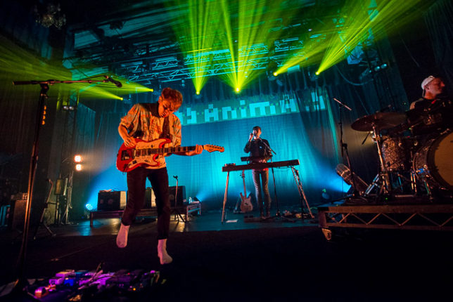

Glass Animals are a English indie rock band from Oxford. The band consists of four members, Dave Bayley (lead vocals, guitar), Drew MacFarlane (guitar, keys, backing vocals),
Edmund Irwin-Singer (bass, keys, backing vocals), and Joe Seaward(drums). The group has released two albums, Zaba(2014) and How to Be a Human Being(2016)